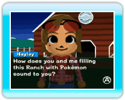
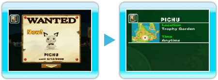
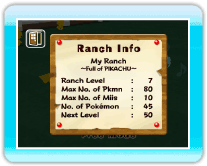

|
15
|
BBS (panneau d'affichage)
|
 |
|
Pokémon Wanted (recherche Pokémon)
Pokémon Wanted (recherche Pokémon) est une demande de Hayley, qui précise les Pokémon qu'elle voudrait que tu ramènes au Ranch. L'annonce prend fin lorsque tu déposes le Pokémon de Pokémon Diamond ou Pokémon Pearl au Ranch. Un avis Pokémon Wanted (recherche Pokémon) n'a qu'une durée limitée et finit par disparaître. Les Pokémon qui sont en Pokémon Wanted (recherche Pokémon) sont le plus souvent des Pokémon que tu n'as pas encore capturés dans Pokémon Diamond ou Pokémon Pearl (en fonction du Pokédex). Lorsque tu termines une mission Recherche Pokémon en capturant le Pokémon recherché et en le déposant au Ranch, un nouvel avis Pokémon Wanted (recherche Pokémon) devient disponible. En terminant les missions Pokémon Wanted (recherche Pokémon), tu parviendras à terminer ton Pokédex. Utilise cette fonction pour terminer ta collection de Pokémon! Sur l'écran Pokémon Wanted (recherche Pokémon), lorsque tu
pointes un Pokémon et que tu appuies sur  De plus, lorsque tu termines une mission Pokémon Wanted
(recherche Pokémon), tu peux pointer la flèche en bas de l'écran et
appuyer sur Lorsque tu déposes un Pokémon recherché au Ranch, Hayley te proposera souvent d'échanger un Pokémon avec elle. Si tu échanges un Pokémon avec Hayley, il sera considéré comme un Pokémon appartenant à Hayley dans le Ranch. De plus, les Pokémon que tu obtiens lors des échanges avec Hayley peuvent être retirés, mais les Pokémon que tu as donnés à Hayley ne seront ni retirables ni transférables vers ton jeu Pokémon Diamond ou Pokémon Pearl. Ranch Info (informations du Ranch)
Tu peux voir ici le niveau du Ranch, le nombre de Pokémon que tu possèdes et le nombre maximum de Mii que tu peux faire venir au Ranch. |
 , tu peux voir des informations concernant la manière de
capturer le Pokémon recherché, ou les conditions nécessaires pour y
parvenir. Si Hayley te demande plusieurs Pokémon d'un coup, pointe
la flèche verte et appuie sur
, tu peux voir des informations concernant la manière de
capturer le Pokémon recherché, ou les conditions nécessaires pour y
parvenir. Si Hayley te demande plusieurs Pokémon d'un coup, pointe
la flèche verte et appuie sur  |
 |
 |